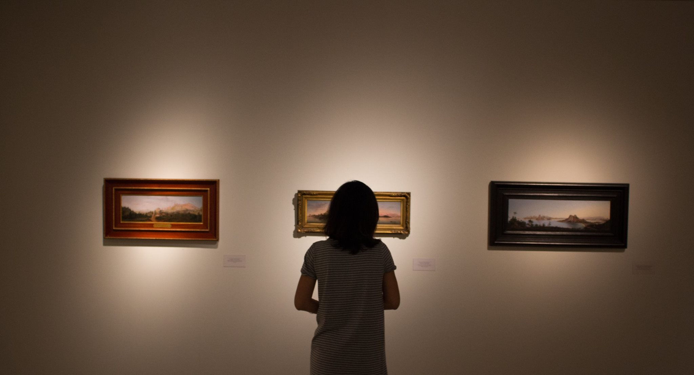

Meu Portifólio: Rute Maxsuelly
Dev Front End
Um texto falando sobre mim
Linguagens que eu tenho experiência
HTML
CSS
Javascript
Cidades que já visitei
Recife
Olinda
Natal
Córdoba
Belo Horizonte
Porto
Lisboa
Ourém
Alguns projetos:
Projetos
Amo Arte e Tecnologia
